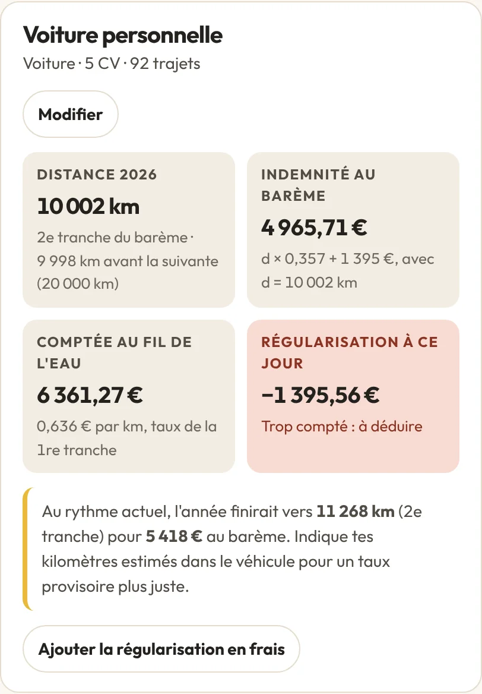
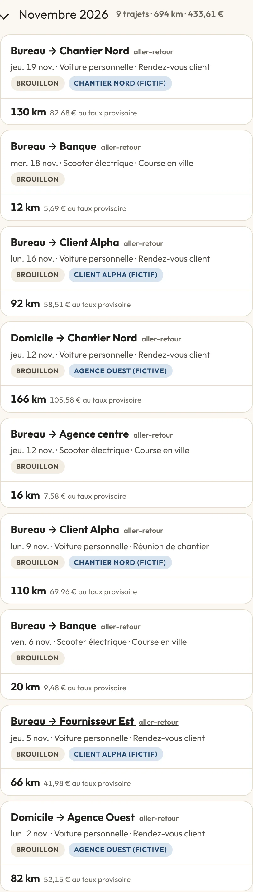

Indemnités kilométriques · voiture 5 CV
1 395 € comptés en trop.
L'erreur : 0,636 € le km toute l'année. Au-delà de 5 000 km, le barème change.
Le calcul · voiture 5 CV · exemple fictif
1 395,56 €
comptés en trop.
Barème fiscal 2025, utilisé en attendant celui de 2026.
Notes de frais · Kilomètres
La régularisation, calculée à ce jour.

Capture de la démo · données fictives
Le barème s'applique au total de l'année.
Trajets de novembre
Chaque trajet saisi, en une ligne.

Capture de la démo · données fictives
Le bon montant, avant la note de décembre.
Notes de frais · démo gratuite · qm-engineering.fr
qm-engineering.fr